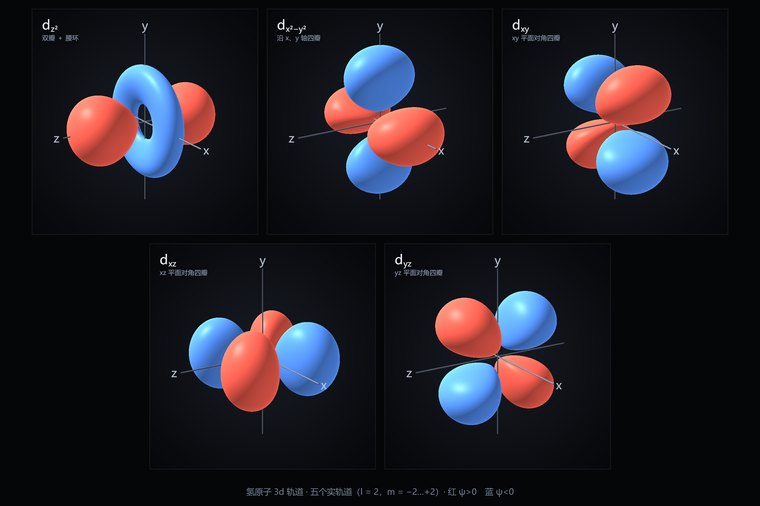
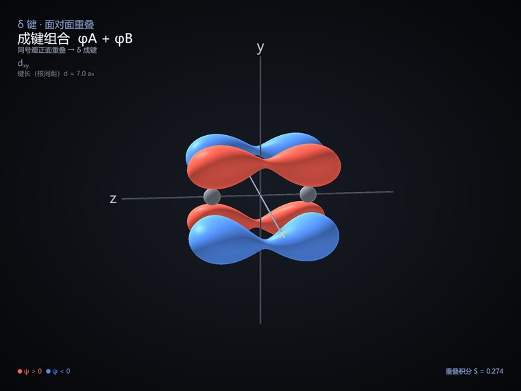
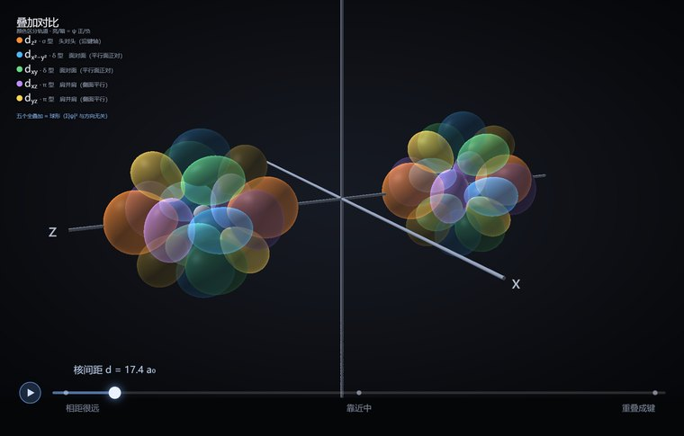

d 轨道的形状、相位与重叠
用球谐函数实时算出来的氢原子 3d 轨道等值面。可以转着看五个轨道的伸展方向， 看波函数的正负相位，也可以拖动时间轴，看两个 d 轨道怎样从远处靠近、形成 σ / π / δ 键。

dz²、dx²−y²、dxy、dxz、dyz。 自由勾选叠加对比，红蓝表示波函数正负相位，可调电子云范围。

两个 dxy 平行靠近、同号瓣正面重叠，四对波瓣接成桥。 可调键长与轨道尺度，实时给出重叠积分，并对比成键 / 反键。

五个轨道全部可选，叠加或并排。拖底部时间轴，看核间距从 20 a₀ 收到 5 a₀ 的全过程——远处各自独立，近处接合成键。